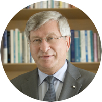

Every year the Canadian government makes public any individuals that receive government money that earn more than $100,000. As partially funded institutions by the government, universities and their staff and administration make up a large chunk of the Sunshine List.
This years 2014 disclosure of the 2013 salary year shows that 1596 York staff are earning more than $100,000 and are included on the Sunshine List.
If we look at the top 3 earners at York University we can see below that their pay that their wages do fluctuate considerably. Looking at the top 10 earners at York University, only 2 are women.
Mamdouh Shoukri is the current president at York University. He earned $478,405.95 in 2013. Among the top three, Shoukri's wage has stayed the most steady over the last 5 years.
Dezso Horvath is the current dean at Schulich School of Business. He earned $475,261.83 in 2013. He has held the position of dean since 1988, and serves on the York University Senate. In 2008 in was awarded the prestige of Order of Canada.
James McKellar is the Executive Director of External Relations at Schulich School of Business. McKellar is also a professors, teaching real estate. He earned $375,203.55 in 2013. McKellar has seen his wage increase the most, fo the top three, increasing more than $100,000 in the last 5 years.